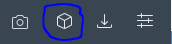
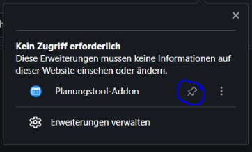

Als erstes musst du das Addon für deinen Browser installieren. Dies ist eigentlich selbsterklärend, du musst nur dem
Link zu dem Installer folgen:
OperaFirefox (wird zurzeit
überprüft)Microsoft Edge Für Safari
wird es allerdings keinen Support geben, da diese zum Veröffentlichen eine Gebühr von ca. 95€/Jahr verlangen.
Schritt 2: Addon anzeigen lassen
Dieser Schritt ist nur für Chrome & Opera notwendig.
Opera
Bei Opera ist oben rechts, neben der Adressbar eine Reihe von Zeichen: 
Wenn du das Markierte Symbol anklickst, sollte sich dieses Fenster öffnen: 
Nun sollte das Addon auch neben der Adressbar angezeigt werden.
Chrome
Bei Chrome ist der Vorgang prinzipiell der selbe Vorgang wie bei Opera, nur das Zeichen für Addons ist ein anderes.
Schritt 3: einen Account hinzufügen
Jetzt, wo du das Addon schön sichtbar in deinem Browser hast, musst du nur noch einen Account hinzufügen,
damit dir deine Konferenzen in LernSax angezeigt werden:
Klicke auf das Addon-Symbol
Klicke auf Accounts
Wähle "Hinzufügen"
Gebe nun bei LernSax-Namen deine LernSax-Email-Adresse ein, sowie bei Klassen-ID die ID deiner Klasse auf
planungstool-fsg.de. Diese ID sind die letzten 4 Buchstaben des Links, der zu deinen Konferenzen führt:
https://planungstool-fsg.de/id/abcd
Alternativ kannst du auch einfach direkt den Link eingeben.
Wenn du alles richtig gemacht hast, sollten dir nun auf LernSax deine Konferenzen angezeigt werden, direkt auf der
Startseite.
Du brauchst Hilfe?
Hilfe erhälst du bei bistry.elias16@fsg.lernsax.de, sowie bei diesem Formular.